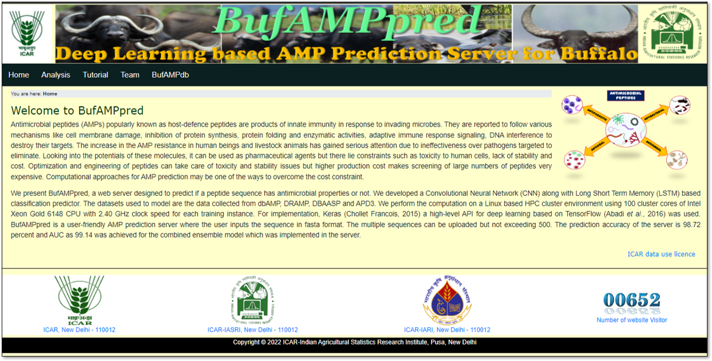
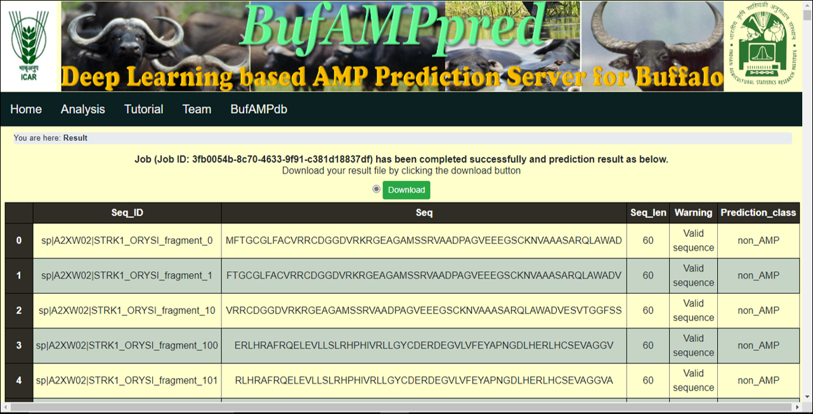

Download the manual for the tutorial by clicking on the download link below.
download manual|
|
| BuffDeepAMP: Deep Learning based AMP Prediction Server for Buffalo is the web server designed to predict if a peptide sequence has antimicrobial properties or not. The webserver is developed based on a Recurrent Neural Network known as Bi-directional GRU for the classification of AMPs of buffalo specific. |
| The BuffDeepAMP contains five tabs viz. Home, Analysis, Tutorial, Team and BuffAMPdb. |
| Home -> This tab provides the brief information of BuffDeepAMP server. |
|  |
| Analysis -> This tab provides the facility to analyse the uploaded fasta file (Amino acid sequence / Peptides sequence) and give the result in a tabular form. |

|

|
| Input fasta file (peptide sequence or amino acid sequence) can directly be imported to web server via uploading the file (fasta file). |

|
| User can also see the fasta format by clicking on the ‘sample file’ link and the sample file will be downloaded. |

|
| Click on the "Analyse your data" button after uploading fasta file on the web page by choosing fasta file from your system, it will open a page where the result will show in a tabular form along with prediction of the AMP Present or Absent. |
|  |
NOTE: The prediction of the Amino acid sequences or Peptide sequence is done only by taking the 60 length fragment of the input sequence. The sequences greater than 60 in length will be cut down in 60 length fragments by sliding one length at a time and will make fragments of the large file.
{% endblock %} {% endblock %}